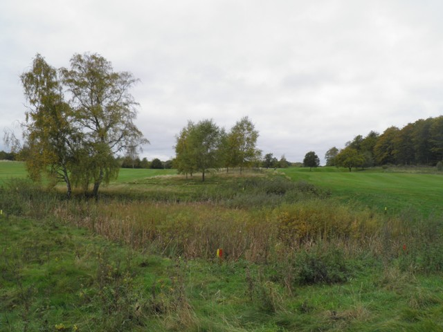

<div class="pages">
  <div data-page="banedesign" class="page navbar-fixed toolbar-fixed" >
    <div class="navbar">
      <div class="navbar-inner">
        <div class="left">
          <a href="#" class="link back icon-only"><i class="icon icon-back"></i></a>
          <!-- <a href="#" class="back link icon-only"><i class="icon icon-back"></i></a> -->
        </div>
        <div class="center">Banedesign</div>
        <!-- <div class="right"></div> -->
        <div class="right">
        </div>
      </div>
    </div>
    <div class="page-content" style="padding-top:45px;">
       <div class="content-block">
          <p>Hornbæk Golfklubs Bane af Arkitekt Rolf Henning-Jensen, Dansk Golf Design</p>
          <center></center>
          <p>Med 'spillereglerne' fra 'Arkitektens arbejdsmetode' i baghovedet, er konceptet for Hornbæk Golfklub udarbejdet.</p>
          <p>Arealet<br />Arealet er meget kuperet. Højest langs områdets grænser, lavest i å-dalen, hvor Gurre Å bugter sig.</p>
          <p>Arealet virker åbent, når det beskues 'fra siderne', men oftest lukket, når man som golfspiller færdes på banen. Arealets grænse, er oftest 'lukket' af levende hegn, bl.a. af store egetræer. Udover at arealet er kuperet, er det også opdelt i forskellige landsskabsrum. Dette giver en masse gode oplevelsesmuligheder på vandringen rundt på Hornbæk Golfbane.<br />Endvidere indeholder arealet små fordybninger - raviner, stenrøser, diger, tværgående gravede grøfter, en rislende bæk og meget mere, som er udnyttet som 'hazards' (forhindringer) i spillet.</p>
          <p>Om banen, hoveddispositionen<br />
          Med udgangspunkt i de spilleregler, som er beskrevet i 'Arkitektens arbejdsmetode', er banen bl.a. disponeret ud fra ønsket om, at den skulle slutte med et spektakulært PAR-5 hul, som skulle kunne ses fra klubhuset. Dvs. hullets tee-sted (startsted), skulle placeres i synlig afstand og ikke kortere end 434 meter fra klubhuset (grænsen for et PAR-5 hul). 18. hul fik dermed sin placering.<br />
          Da det samtidigt er vigtigt at lægge de smukkeste oplevelser ind til sidst, når man planlægger en golfbane, var det oplagt at 17. hul blev et kort PAR-3 hul, hvor man skulle spille over søen.<br />
          Med den anden vigtige regel for øje, om at driving-range og 1. hul skal ligge så tæt på klubhuset og så tæt på hinanden som muligt, faldt placeringen af disse på plads.<br />
          Spillerstien fra 1. til 2. hul krydser som det eneste sted banens spillerute, hvor stien fra 17. green til 18. huls tee krydses.<br />
          Med ønsket om at out of bounds skal ligge i hook-siden, hvilket er væsentligt mindre farligt end det modsatte, er de øvrige huller herefter udlagt.</p>
          <p>Man spiller altså i princippet resten af banen 'med uret'.</p>
          <p>De enkelte huller<br />
          1. hul, som før beskrevet, et PAR-5 hul, lidt dog-leg venstre, ikke særligt langt, men med en lille sø indlagt på ydersiden af dog-leg'et, så 'hovedløse' lange drives bliver opfanget.
          <br /><br />  
          2. og 3. hul, PAR-4 huller, hvor præcision og længde er vigtig, men ikke afgørende. Begge huller kan overskues fra tee-stedet, spilleruten kan fastlægges herfra.
          <br /><br />  
          4. hul, et PAR-3 hul, en smuk baggrund, lidt ned ad bakke.
          <br /><br />  
          5. hul, et PAR-5 hul. Hullet 'underordner sig' Gurre Å's forløb. Drivet indrammes af træer på hver side, hvor især egetræet til venstre vil kunne genkendes i klubbens logo. Bunkers langs hullets højre side vil sætte tankerne i gang. Det smukke landskab vest for Gurre Å, med græssende heste og smukke søer ses på vejen ad 5. fairway. Måske bliver 5. hul banens smukkeste.
          <br /><br />  
          6. hul er et strategisk PAR-3 hul. Greenen er lagt på toppen af et skrånende terræn. Bolden skal flyves over en sø. For den mindre øvede spiller, vil spilleruten gå venstre om. Hér kommer en bunker i spil.
          <br /><br />  
          7. hul, et PAR-4 hul hvor tee-stedet er hævet. Tee-stedet ligger på områdets højeste punkt, hvorfra udsigten er storslået. Afstanden til beplantningen og ravinerne til venstre gør drivet interessant. En sø i slice-siden foran greenen, og én bagved, gør hul 7 til et svært hul.
          <br /><br />  
          8., 9., 10. og 11. hul er indarbejdet i terrænet, så grøfter og raviner indgår strategisk. 8. green er 'lukket' bagved af jordvolde. Fra 9. tee, fælles med 11. skal drivet ligge præcist for at undgå beplantning på hver side af fairway. Først skal man dog flyve sin bold over en sø. Drivet fra 10. tee skal igen spilles tæt forbi en oprenset ravine. Langs hullets venstre sider er der out of bounds, og en sø til højre for greenen gør hullet til et af banens sværeste.</p>
          <center></center>
          <p>12. hul. Der kan pustes ud på bænken ved 12. tee. Nu starter hjemturen. I det fjerne i skoven ligger greenen. Et langt PAR-5 hul. En terrænregulering har sikret, at der både er niveauforskel mod 5. og 11. fairway. En vandhazard i drivets landingsområde er meget synlig fra teestedet! 2. slaget skal 'lægges op' for at få den rigtige indgang til greenen, hvor en bæk skal passeres. En træbro fører spilleren tørskoet over bækken. Spillerstien fra 12. green går gennem skoven ud til venstre, således at man ikke generer bagfra kommende spillere.
          <br /><br />  
          13. hul. Man skal tænke sig om, inden man fyrer kanonen af. Jord-bulen på fairway gør 2. slaget blindt, hvis ikke drivet er placeret til venstre for bulen. 13. hul er et PAR-4 hul.
          <br /><br />   
          14. hul, et PAR-3 hul med en stor niveauforskel fra tee til green. Den store green er lagt ind i terrænet, hvor et hul til højre for greenen nu er blevet til en bunker.
          <br /><br />   
          15. hul, spilles langs Gurre Å. Man skal dog først slå over den. En nyopgravet sø til højre for fairway kan komme 'i spil'. Indspillet til greenenskal ligge præcist, idet en sø lige bagved og 2 green-bunkers minimerer landingsfeltet. Et PAR-4 hul.
          <br /><br />  
          16. hul er 305 meter langt fra gul tee, PAR-4. Fra tee-stedet ses flaget på greenen, bag nogle græsvolde, men den lige vej kan ikke anbefales. Et drive bør lægges langt over til venstre, også for at undgå en af banens få fairwaybunkers. På turen til greenen, åbnes udsigten til højre til den smukke sø. Fra den højtliggende green ses 17. huls green. Man glæder sig allerede.
          <br /><br />   
          17. hul, et PAR-3 hul, kun 112 meter fra gul tee, men der er ikke plads til mange fejltagelser.
          <br /><br />   
          18. hul, et kort PAR-5 hul, men med mange mulige forhindringer på vejen. Et afslutningshul, hvor greenen kan nås med 2 gode slag. Men en to-cifret score kan også blive resultatet på banens sidste hul. Hullets placering i landskabet giver gode muligheder for tilskuere til at følge spillet. Dette kan da også give lidt ekstra nerver hos nogle, og sådan skal et afslutningshul være.
          <br /><br />   
          Vejen til 19. hul kan føles lang, alt efter dagens resultat.</p>
          <p>Om fremtiden<br />
          Der er tænkt på placering af back-tees, når klubbens økonomi tillader det. Fra hvid tee kan længden blive på ca. 6.275 meter.
          <br /><br />
          Herudover er en række fairwaybunkers skitseret. En beplantningsplan er udarbejdet, og ideer til forbedringer er på tegnebordet.
          <br /><br />  
          En golfbane er en levende ting. Den forandrer sig år for år. En golfbane bliver aldrig færdig, men bliver som regel smukkere med årene.
          <br /><br /> 
          Man må håbe, at dét, der er sat i gang nu, vil give en masse gode og smukke oplevelser i fremtiden, både spilleteknisk men også oplevelsesmæssigt.</p>
        </div>
    </div>
    </div>
    </div>
  </div>
</div>
